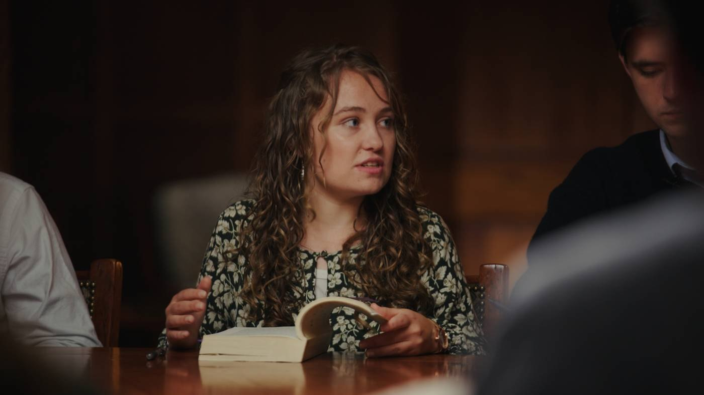
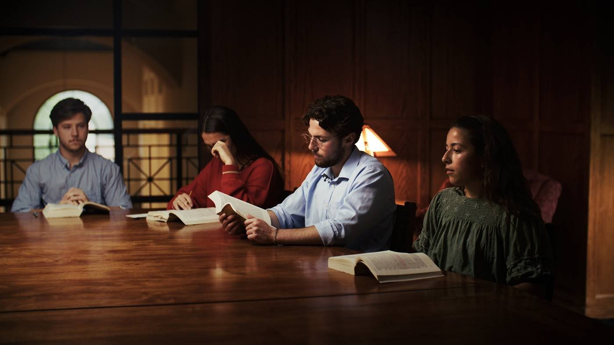
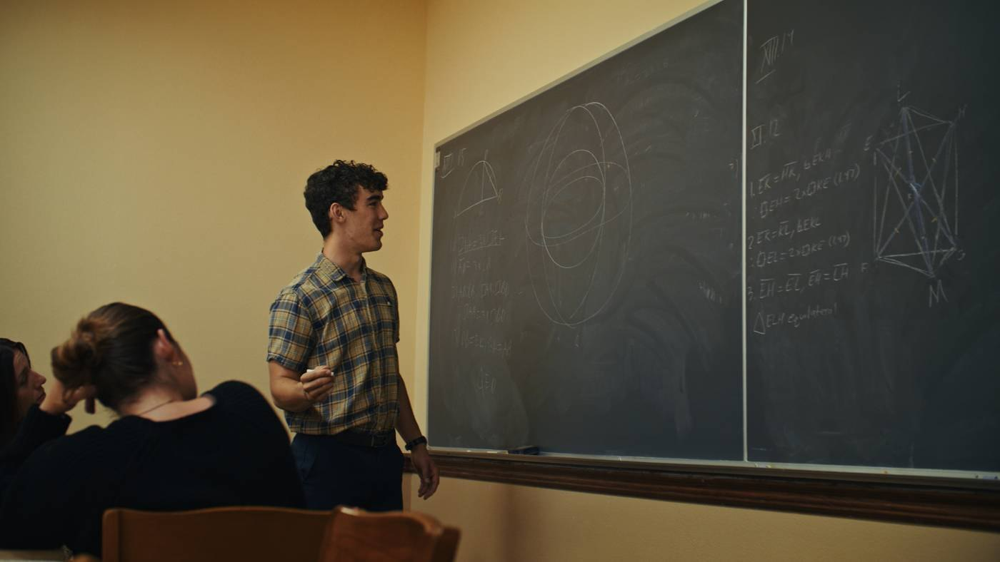

I’m applying to college
Prospective Students
Four years. Two campuses. One curriculum. An admissions counselor walks with you through every step, including financial aid.
Apply Now!
An inside look at the seminar
At Thomas Aquinas College, students don’t study about the great minds of the West. They read them, question them, and reason together toward the truth, in the light of the Catholic faith.
Fides quaerens intellectum
IFor those who love the tradition
If you’ve been moved by the renewal of classical liberal education in America, or by the Church’s call to reach the modern mind through truth, goodness, and beauty, you’ve likely wondered where that vision is lived out, fully and without compromise.
For more than fifty years, Thomas Aquinas College has offered one answer: a single, integrated curriculum of the great books, pursued through disciplined conversation, ordered to wisdom, and illumined by the faith.


Students read the original works of Euclid, Plato, Aristotle, Augustine, Aquinas, Newton, and more, rather than summaries of them.

A small class gathers around one table. The tutor guides; the students do the work of thinking, and of demonstrating at the board.
No majors, no electives. Every student studies nature, man, and God as one ordered whole, from mathematics to theology.
IITake a seat at the table
No script, no slides. Just students, a text, and a question, and the patient, rigorous work of arriving at the truth together.
To renew Catholic liberal education
Students in every discussion-based class
Only the original great works
Santa Paula, CA & Northfield, MA
“The study of philosophy is not that we may know what men have thought, but what the truth of things is.”
St. Thomas Aquinas
IIIHow a class unfolds
The tutor’s job is to ask, not to tell. Over the course of an hour, a room full of minds works its way toward the truth of the matter, and learns how to think along the way.
Not a quiz, but a real question about the text in front of everyone.
Each answer invites a question in return, and everyone at the table takes part.
The goal is not to win the argument but to understand, and to carry the question into the next conversation.
IVTake your seat
Two ways to sit at the table: four years in the College, or a summer in the High School Great Books Program.
I’m applying to college
Four years. Two campuses. One curriculum. An admissions counselor walks with you through every step, including financial aid.
Apply Now!I’m a high school junior
For rising high school seniors. Read the great books, join real classes, and live the life of a TAC student for one or two weeks this summer.
Apply Now!